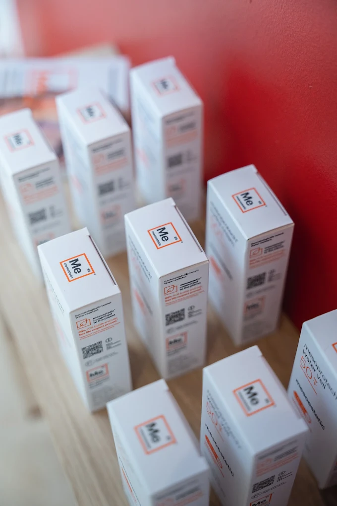

L'institut LUMIA à Manosque propose une sélection de cosmétiques et de compléments alimentaires professionnels, pour prolonger chez vous les résultats obtenus en cabine. Deux marques, choisies pour la qualité de leurs actifs et réservées aux praticiens formés : Mesoestetic pour le visage et LPG pour le corps. Le conseil est personnalisé, selon votre peau et vos objectifs, jamais selon une gamme imposée.
Mesoestetic, pour le visage
La gamme Mesoestetic est dédiée au visage. Elle couvre l'hydratation au quotidien, les peaux sensibles et réactives, le micropeeling pour affiner le grain de peau, et une gamme solaire pour protéger les résultats obtenus. Ce sont les mêmes actifs professionnels que ceux employés pendant les soins en cabine, ce qui permet de construire une routine cohérente entre l'institut et la maison.
- Hydratation : les soins du quotidien pour maintenir le confort et la souplesse de la peau.
- Peaux sensibles : des formules apaisantes pour les peaux réactives ou fragilisées.
- Micropeeling : pour lisser le grain de peau et raviver l'éclat, en douceur.
- Gamme solaire : indispensable après un protocole dépigmentant, un laser ou un microneedling.

LPG, pour le corps
Pour le corps, l'institut travaille avec LPG, la marque de la technologie Cellu M6 utilisée en cabine. La gamme réunit les cosmétiques minceur et anti-cellulite, ainsi que des compléments alimentaires anti-âge et drainants. Ces nutricosmétiques agissent de l'intérieur, en soutien d'un protocole LPG, et ne remplacent pas les séances : ils les prolongent.
- Minceur et anti-cellulite : les cosmétiques corps qui accompagnent les séances de Cellu M6.
- Compléments alimentaires drainants : en appui d'un protocole détox ou silhouette.
- Compléments anti-âge : pour soutenir la fermeté et la qualité de la peau de l'intérieur.
Coffrets et cartes cadeaux
Des coffrets cadeaux et des cartes cadeaux sont disponibles à l'institut. La carte peut porter sur un montant libre ou sur une prestation précise, soin du visage, séance de LPG ou bilan laser. Les coffrets associent produits et soins, et sont préparés sur place. C'est une idée simple pour offrir un moment pour soi, à Manosque.
Questions fréquentes sur les cosmétiques
Faut-il être cliente de l'institut pour acheter les produits ?
Non. La boutique est ouverte à tous, que vous suiviez un protocole à l'institut ou non. Un conseil personnalisé vous est proposé pour choisir les produits adaptés à votre peau ou à votre objectif.
Comment savoir quels produits conviennent à ma peau ?
Le plus simple est d'en parler lors d'un soin ou d'un bilan. La routine est construite selon votre type de peau et vos problématiques, plutôt que selon une gamme imposée.
Les compléments alimentaires remplacent-ils les soins ?
Non, ils les complètent. Les nutricosmétiques LPG agissent de l'intérieur, en soutien d'un protocole minceur, drainant ou anti-âge. Les résultats se construisent avec les soins en cabine et une bonne hygiène de vie.
Proposez-vous des cartes cadeaux ?
Oui. Des cartes cadeaux et des coffrets sont disponibles à l'institut, d'un montant libre ou pour une prestation précise. Ils sont préparés sur place et remis en main propre.
Pourquoi des marques professionnelles plutôt que de la grande distribution ?
Les gammes Mesoestetic et LPG sont des gammes professionnelles, aux actifs plus concentrés, distribuées uniquement par des praticiens formés. C'est ce qui permet d'adapter la routine à votre peau en toute sécurité.
Les produits prolongent nos soins : découvrez les soins du visage, le LPG endermologie, le microneedling et le protocole COSMELAN. Les prix des prestations sont sur la page tarifs.